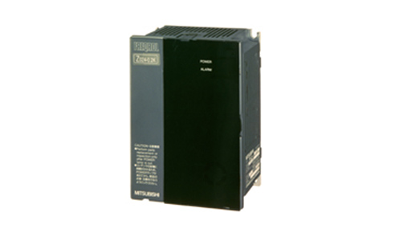

FA's Contribution to the history of Mitsubishi ElectricFA innovations, firsts and vision

FA: Consistently Innovating
At Mitsubishi Electric innovations are not random chance but are evidence of our culture of Kaizen. As a result we are regularly one of the top five companies globally for filing international patent applications, many of which go on to become products in their own right. FA has been a strong contributor to such technical innovations; here are just a few examples:
2018
Industry pioneer:
release of AI enabled iQ Edgecross Real Time Data Analyser software and the MELIPC industrial PC series
Learn more
2018
Industry pioneer:release of AI enabled iQ Edgecross Real Time Data Analyser software and the MELIPC industrial PC series
In May 2018, Mitsubishi Electric launched its iQ Edgecross software suite begining with the Real Time Data Analyzer (RTDA) an AI-enabled (Maisart), data analysis and diagnostics software. Compatible with the computing software platform, Edgecross, the software supports preventive maintenance and quality improvements on the production shop floor.
The MELIPC industrial PC series was launched at the same time. Ideal for factory automation related control and edge computing applications, such as the RTDA, the initial three models included the flagship MI5000, able to process production information and conduct real-time control of equipment from one unit. Later in February 2019 the range was expanded with the MI3000 Panel IPC offering a built-in high-resolution liquid crystal touchscreen display.
2001

Industry pioneer:
launch of the e-F@ctory FA-IT integrated approach to manufacturing
Learn more
2001
Industry pioneer:launch of the e-F@ctory FA-IT integrated approach to manufacturing
In 2001 the increasing importance of computerization, information sharing between production sites and management departments, remote monitoring, integrated services through the product life cycle and customized products all started to impact the factory automation (FA) environment. This lead to Mitsubishi Electric developing the "e-F@ctory" concept as a way to solve these and other FA-IT related issues.
e-F@ctory is the basis of a framework to optimize the entire manufacturing process by connecting all equipment and processes such as development, manufacturing, logistics, etc. with IoT. From this users can quickly respond to changes in the market environment, find added value through analysis and take immediate action on data collected in the manufacturing process. Since 2003 when initial full-scale proposals to customers started, its scope has been widened to include supply chain issues, additional product groups and support tools amongst other things. e-F@ctory has continuously evolved to support factory improvement activities and lower the total cost of ownership (TCO).
1999
Performance leader:
highly responsive MELSERVO-J2-Super series AC servo improved productivity of industrial machines
Learn more
1999
Performance leader:highly responsive MELSERVO-J2-Super series AC servo improved productivity of industrial machines
In 1999, Mitsubishi Electric released the AC servo MELSERVO-J2-Super series to address higher productivity demands in semiconductor manufacturing equipment and machine tools. To do this, many advances were made, for example, the servo's amplifier had the most responsive servo control performance in the industry, real-time auto-tuning for greater usability, a machine analysis function that analyzed the machine's mechanical characteristics from the servo's perspective, and a gain search function that optimized the settling time. In addition the HC-KFS servo motor was designed with the same external dimensions as predecessor products and had a high inertia load to make it easier to increase the servo gain for low-rigidity devices. Furthermore, a detector with an absolute encoder 16 times the resolution of conventional products was added as standard. The result was a servo system that delivered high functionality and ease-of-use that contributed to the overall development of the manufacturing industry.
1991

Japan's first:
development of the ultra-compact inverter, FREQROL-Z024 series
Learn more
1991
Japan's first:development of the ultra-compact inverter, FREQROL-Z024 series.
In April 1991, Mitsubishi Electric released the FR-Z024, the industry's first pocket book (A6) sized ultra-compact inverter. Four times smaller than the typical (A4) sized 0.4kW inverter at the time, the goal was to "differentiate and suprise" through technological innovation.
To achieve this it was necessary to use minaturized ICs (integrated circuits) typically found in consumer goods. Although the electrical noise immunity of the ICs was an issue, after a series of trial and error with component placement, among other things, a successful design meeting the standard was finally achieved. Moreover, advances in production technology were also required as the compact circuit boards needed high density, surface mounting of components for the first time. In addition, to achieve the target A6 size, the power unit and control unit were seperated and arranged one above the other. The FR-Z024 inverter, created by overcoming a number of challenges, surpassed the sales of other companies and cemented Mitsubishi Electric's top-level share in the Japanese market.
1987

Company first:
launch of the Movemaster high performance micro robot for education and industry
Learn more
1987
Company first:launch of the Movemaster high performance micro robot for education and industry
Developed in 1982 the Mitsubishi Movemaster was a desktop robot for education and research. The concept behind the small, lightweight robot, with motor capacity of less than 80W, was easy control from a personal computer making it accessible for anyone to use; from industry to schools or laboratories. Moreover, as well as being a popular personal robot, there was an increasing demand for the inexpensive and easy-to-use Movemaster in industrial settings to perform light, simple tasks. At the end of the 1980s the RV-M1 series was developed. It used a DC servo motor, and provided enhanced basic performance and increased program functions, all helping the Movemaster become the best-selling robot in the world.
1985

Best seller:
release of the MELSEC-A series all-purpose PLC for FA applications
Learn more
1985
Best seller:release of the MELSEC-A series all-purpose PLC for FA applications
Compared with the existing K series, targeted at automotive and food production line control, the release in 1985 of the more versitile MELSEC-A series programmable logic controller (PLC) addressed a wide range of general factory automation (FA) control applications. Taking advantage of surface mount technology to reduce its size, the A-series expanded its capabilities by adding a range of options such as positioning and communication units. Weighing less than 8 kg, the programming unit was half that of conventional models, enabling it to be easily carried around on the factory floor. Moreover, by inheriting the sequence control programming language from earlier models the A-series was widely accepted by users and went on to greatly contribute to expanding the PLC business.
1973

Company first:
launch of the MELSEC-310, Mitsubishi Electric's first PLC to replace the relay control panel
Learn more
1973
Company first:launch of the MELSEC-310, Mitsubishi Electric's first PLC to replace the relay control panel
In the 1960s, relay control panels in production facilities became larger and more complex due to the increased scale of control. As such, a new architecture was needed to deal with this expansion. To address this, the technologies and know-how of four divisions; the Computer Systems Center, the Control Systems Center, Nagasaki Works, and Nagoya Works were brought together, and in 1973, the company's first programmable logic controller (PLC), the MELSEC-310, was completed.
By utilizing semiconductors with integrated circuits and digital technologies developed to support the rise in electronic computers, control processes could easily be changed by replacing wired logic through conventional electromagnetic relays with software logic through memory and processors. This highly reliable and easy-to-use basic architecture laid the foundations for today's PLC systems.
1964
Company first:
the company's first fully manufactured EDM system, the DIAX
Learn more
1964
Company first:the company's first fully manufactured EDM system, the DIAX
Mitsubishi Electric took over production of the main body for selected machines from Mitsubishi Heavy Industries in 1963. Then, in 1964, the first die sinking electrical discharge machine (EDM) to be fully manufactured by Mitsubishi Electric, the DIAX-DM201, rolled off the production line. In the same year, Mitsubishi Electric utilized thyristor semiconductors for the power supply to solve one of the industries biggest challenges; excessive electrode wear, thereby establishing its position in the industry. In 1972, the company started production of wire electrical discharge machines, the DIAX-DWC50S-LT. In response to industry demand for greater machining speed, in a world's first, Mitsubishi Electric equipped an N-series system with a transistorized power supply, enabling high-speed switching with high peak current, to achieve the world's fastest machining speeds of 60㎟ per minute. The company has continued to drive-up the world's fastest speeds, from 250㎟ per minute in 1985 to 500㎟ per minute in 2002. Mitsubishi Electric maintains its hold on the top position in the industry having produced a total of 70,000 units up until February 2019.
1933
Industry first:
Japan's first fuseless 15-35A circuit breaker
Learn more
1933
Industry first:Japan's first fuseless 15-35A circuit breaker
In 1933, Mitsubishi Electric launched the first domestically produced fuseless 15-35A circuit breaker. Prior to this fused switches were used for power inlets but there were problems with this setup, for example, it was time-consuming to maintain, change fuses, etc. and there were also concerns about safety. The new fuseless circuit breaker that was to replace fused switches was developed and released by Westinghouse Electric of the United States in 1929. However, Mitsubishi Electric brought this technology to Nagoya Works, developed it further and released the first Japanese produced fuseless circuit breaker in 1933. Production of the fuseless circuit breaker was moved to its Fukuyama Works in 1962, and even now, continues to making huge strides both domestically and internationally.